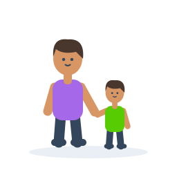
parent
Orang dewasa menggandeng anak
Use with audio or meaning
carpet
Permadani persegi panjang dengan pola belah ketupat
Picture clue
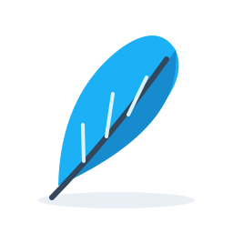
feather
Sehelai bulu burung berwarna biru
Picture clue
doctor
Dokter berjas putih memakai stetoskop
Picture clue
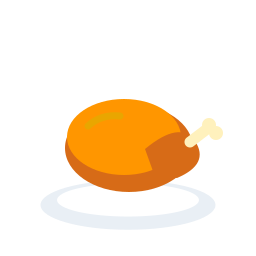
roast
Ayam panggang di atas piring
Use with audio or meaning
mailbox
Kotak surat biru dengan bendera merah dan amplop
Picture clue
peaceful
Pemandangan danau yang tenang dengan bukit hijau
Use with audio or meaning
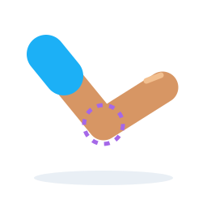
elbow
Lengan ditekuk dengan penanda pada siku
Use with audio or meaning
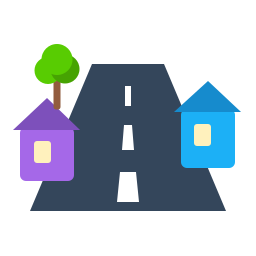
street
Jalan dengan marka putih di antara rumah-rumah
Picture clue
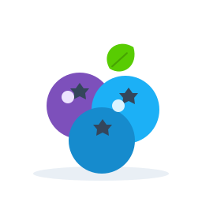
blueberry
Tiga buah beri biru dengan mahkota kecil di ujungnya
Picture clue
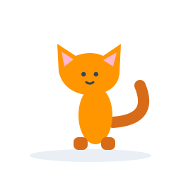
skinny
Anak kucing bertubuh ramping
Use with audio or meaning
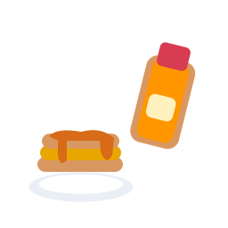
syrup
Cairan manis berwarna keemasan dituangkan ke panekuk
Picture clue
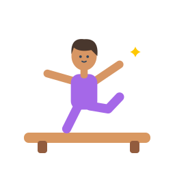
gymnast
Pesenam menyeimbangkan tubuh di atas balok
Picture clue
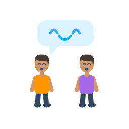
joke
Dua anak tertawa bersama dengan gelembung percakapan
Use with audio or meaning
rubber
Bahan karet ditunjukkan sebagai pita melingkar dan lembaran lentur
Use with audio or meaning
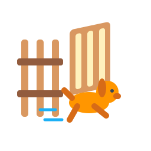
escape
Anjing berlari keluar melalui pagar yang terbuka
Use with audio or meaning
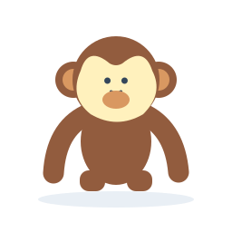
chimpanzee
Simpanse cokelat dengan wajah krem dan lengan panjang
Picture clue
sofa
Tempat duduk panjang empuk berwarna ungu
Use with audio or meaning
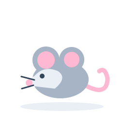
mouse
Tikus kecil abu-abu dengan telinga bulat dan ekor merah muda
Picture clue
shellfish
Kerang bercangkang di samping kepiting merah
Picture clue
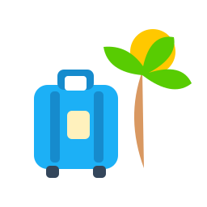
vacation
Koper di samping pohon palem dan matahari
Use with audio or meaning
toothpaste
Tabung pasta gigi dengan sikat dan gumpalan pasta
Picture clue
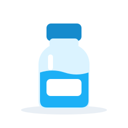
bottle
Wadah air biru dengan tutup ulir
Picture clue
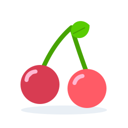
cherry
Dua buah ceri merah menggantung pada tangkai hijau
Picture clue
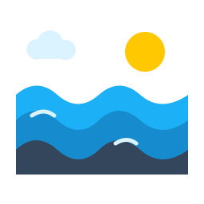
ocean
Hamparan air laut dengan lapisan ombak biru
Use with audio or meaning
cash
Uang kertas dan beberapa keping uang logam
Use with audio or meaning
glasses
Kacamata bulat dengan bingkai ungu
Picture clue
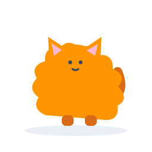
fluffy
Kucing berbulu tebal dan mengembang
Use with audio or meaning
speakers
Sepasang pengeras suara dengan kerucut bundar
Picture clue
switch
Sakelar lampu dengan tombol miring pada pelat dinding
Picture clue
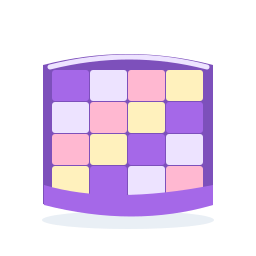
quilt
Selimut tebal berlapis dengan kotak-kotak warna
Use with audio or meaning
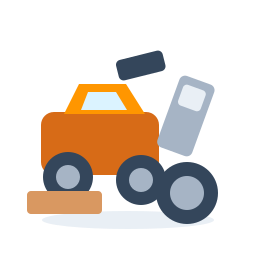
junkyard
Tumpukan ban, mobil rusak, dan barang rongsokan
Picture clue
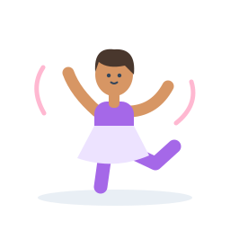
graceful
Penari bergerak dengan lengan dan kaki terentang
Use with audio or meaning
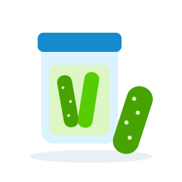
pickle
Mentimun acar hijau di samping stoples
Picture clue
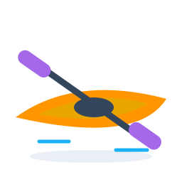
kayak
Perahu kecil panjang dengan dayung berbilah dua
Picture clue
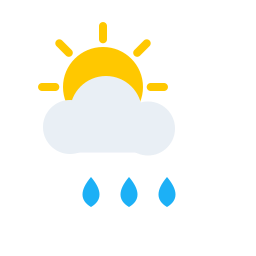
weather
Matahari, awan, dan tetes hujan
Use with audio or meaning
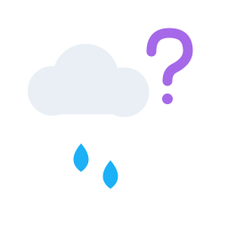
might
Awan dengan kemungkinan hujan dan tanda tanya
Use with audio or meaning
December
Kalender dengan angka dua belas dan hiasan akhir tahun
Use with audio or meaning
teacher
Guru berdiri di samping papan tulis dan memegang penunjuk
Picture clue
dentist
Dokter gigi dengan alat pemeriksaan dan gambar gigi
Picture clue
management
Tim pengelola berdiskusi di meja dengan rencana kerja
Use with audio or meaning
telephone
Pesawat telepon meja dengan gagang melengkung
Picture clue
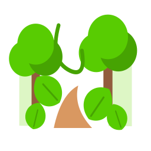
jungle
Hutan rimbun dengan pohon, dedaunan, dan sulur
Picture clue
seesaw
Papan jungkat-jungkit dengan dua dudukan
Picture clue
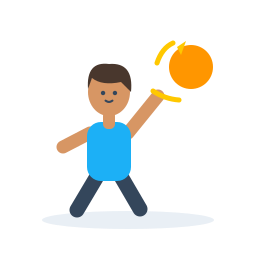
throwing
Anak sedang melempar bola ke depan
Use with audio or meaning
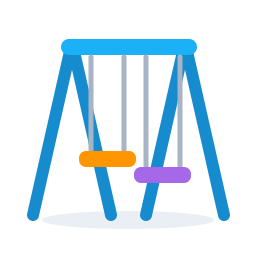
swings
Dua ayunan menggantung pada rangka biru
Picture clue
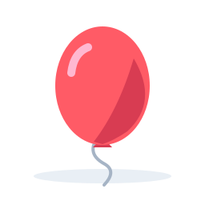
balloon
Balon merah dengan tali melengkung
Picture clue
flowers
Tiga bunga berwarna merah, ungu, dan kuning
Picture clue
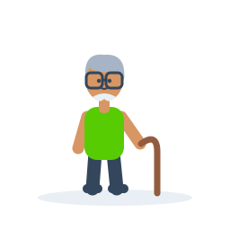
grandfather
Kakek berambut abu-abu berkacamata dan memegang tongkat
Use with audio or meaning
evening
Rumah saat senja dengan matahari terbenam dan bulan sabit
Use with audio or meaning
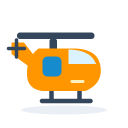
helicopter
Helikopter oranye dengan rotor dan ekor panjang
Picture clue
magazine
Majalah terbuka dengan gambar dan kolom artikel
Use with audio or meaning
staircase
Tangga bertingkat dengan pegangan biru
Picture clue
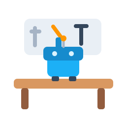
workshop
Meja kerja dengan perkakas dan robot kecil
Use with audio or meaning
restaurant
Rumah makan dengan kanopi, piring, dan alat makan
Picture clue
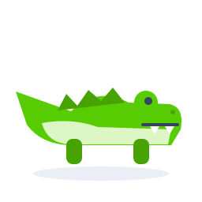
crocodile
Buaya hijau dengan moncong panjang dan punggung bergerigi
Picture clue
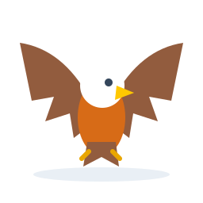
eagle
Elang dengan sayap terbentang dan paruh kuning
Picture clue
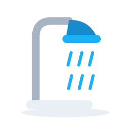
shower
Pancuran air dengan tetesan biru
Picture clue
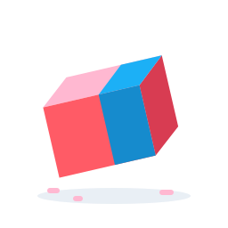
eraser
Penghapus dua warna dengan serpihan kecil
Picture clue
queen
Ratu memakai mahkota dan jubah ungu
Picture clue
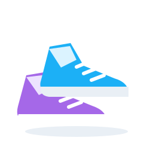
sneakers
Sepasang sepatu olahraga bertali
Picture clue
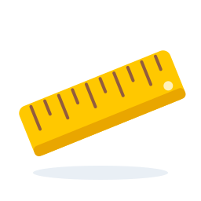
ruler
Penggaris kuning dengan tanda ukur
Picture clue
quiz
Kartu soal dengan tanda tanya dan beberapa pilihan
Use with audio or meaning
chair
Kursi kayu dengan sandaran biru
Picture clue
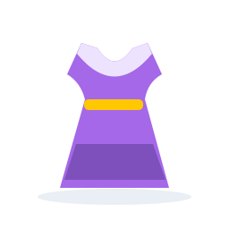
sleeveless
Gaun tanpa lengan dengan bukaan bahu terlihat
Use with audio or meaning
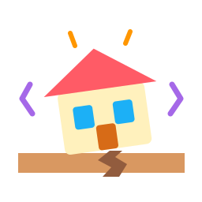
earthquake
Rumah bergoyang di atas tanah yang retak
Picture clue
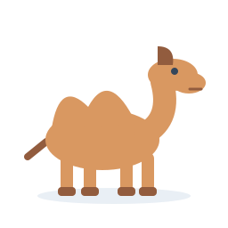
camel
Unta cokelat berleher panjang dan berpunggung berpunuk
Picture clue
soup
Mangkuk sup hangat berisi sayuran dengan uap
Picture clue
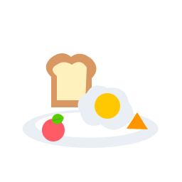
breakfast
Sepiring telur, roti panggang, dan buah untuk sarapan
Use with audio or meaning
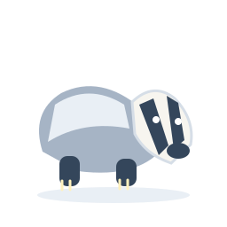
badger
Hewan penggali berbadan abu-abu dengan garis hitam pada wajah putih
Picture clue
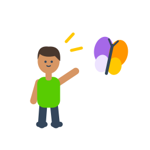
notice
Anak melihat kupu-kupu dengan tanda perhatian di dekat wajah
Use with audio or meaning
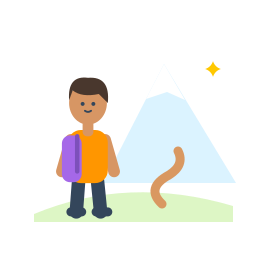
adventure
Anak membawa ransel menuju pegunungan
Use with audio or meaning
toaster
Pemanggang roti biru dengan dua potong roti muncul di atasnya
Picture clue
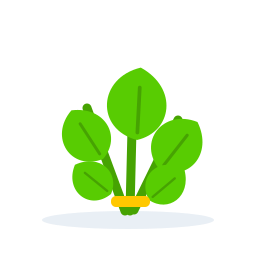
spinach
Seikat sayur berdaun hijau dengan batang panjang
Picture clue
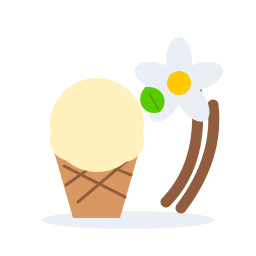
vanilla
Bunga putih, polong gelap, dan es krim putih
Use with audio or meaning
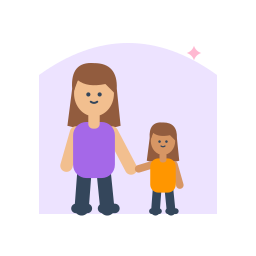
niece
Perempuan dewasa bersama anak perempuan dengan bingkai keluarga
Use with audio or meaning
office
Ruang kerja dengan meja, komputer, kursi, dan jendela
Use with audio or meaning
lantern
Lentera kuning dengan pegangan dan pelindung kaca
Picture clue
rainbow
Pelangi berwarna-warni di antara dua awan
Picture clue
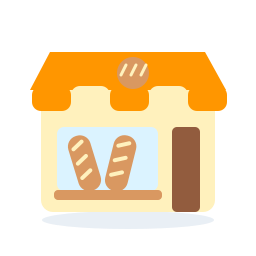
bakery
Toko roti dengan kanopi dan roti di etalase
Picture clue
postcard
Kartu pos bergambar pemandangan dan perangko
Picture clue
flight
Pesawat terbang melintas di antara awan
Use with audio or meaning
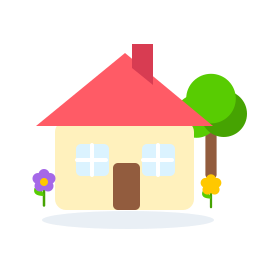
cottage
Rumah kecil dengan atap merah, bunga, dan pohon di pedesaan
Use with audio or meaning
rice
Mangkuk berisi nasi putih dengan butiran terlihat
Picture clue
divide
Delapan kue dibagi sama rata ke empat piring
Use with audio or meaning
centipede
Kelabang beruas panjang dengan banyak pasang kaki dan dua antena
Picture clue
couch
Tempat duduk panjang empuk dengan dua bantalan
Use with audio or meaning
gorgeous
Pemandangan matahari terbenam berwarna cerah di atas pantai
Use with audio or meaning